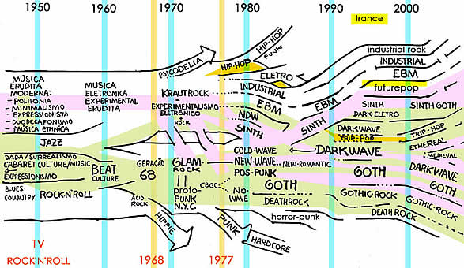

|
Na árvore genealógica
que ilustra este artigo, há alguns rótulos não
oficiais, usados apenas para organizar uma listagem on-line. O
foco desta árvore é a formação dos
estilos gothic/ darkwave/pós-punk e "parentes"
mais próximos. Obviamente, se o foco fosse a formação
de outros estilos, estes estariam no centro e mais detalhados.
Abaixo, comentamos, alguns mais longamente que
outros, os seguintes rótulos/estilos:
-
01 - Glam Rock
02 - Krautrock
03 - ColdWave
04 - New Wave e French New Wave
Neue Deutsche Welle
05 - Pós-Punk
06 - Industrial
07 - E.B.M.
08 - Darkwave
09 - Gothic e Gothic-Rock
10 - New Romantic
11 - Death-Rock e Horror-Punk
12 - Ethereal e Ethno
13 - Medieval
14 - Trip-Hop e Trip-Goth
15 – Synth-Pop
16 – Futurepop

Notas:
CBGC
Importante clube noturno de NY na década
de 70. Costuma-se chamar geração CBGC de 1975 as
bandas proto-punks (proto-pós-punks na opinião de
alguns) que tocavam nos palcos desta casa neste ano: Talking Heads,
Patty Smith Group, Television, Blondie, Richard Hell and The Voidoids,
Ramones e muitos outros que foram precursores do que poucos anos
depois seria chamado de Punk, Pós-Punk e New-Wave.
Geração 68
1968 foi um ano que a juventude do mundo ocidental
saiu as ruas em busca de mudanças culturais. Isso refletiu
na criatividade musical deste período. De 1967 a 1970 se
tornam conhecidos vários artistas que influenciaram diretamente
o que posteriormente foi chamado de Gótico, Pós-Punk
e Darkwave: Iggy Pop & The Stooges, The Doors, Velvet Underground,
Nico, John Cale, David Bowie e Leonard Cohen, ente outros.
1 - Glam Rock
Tecnicamente, o Glam Rock existiu de 1970 a 1975.
Mas sua influência pode ser notada até hoje. O estilo
se caracteriza por uma temática Hedonista-Decadentista,
Androginia, um Rock básico ou recheado de experimentalismo,
muitas vezes considerado Proto-Punk, mas também havia lugar
para muito lirismo, folk, cabaret e poesia. Exemplos: T-Rex, New
York Dolls, Iggy Pop & Stooges, David Bowie, Lou Reed, Roxy
Music, Sweet, Slade, Gary Gltter.
O Glam-Rock influenciou diretamente o Pós-Punk
e o Gótico, tanto na musicalidade como em sua temática
e abordagem, sendo que muitas das primeiras bandas góticas
pareciam e soavam muito como bandas Glam (Bauhaus
e Specimen).
2 - Krautrock
Krautrock é o nome que se dá ao experimentalismo
no Rock alemão de aproximadamente 1969 a 1977. Este experimentalismo
mistura Rock, Psicodelia, música experimental eletrônica,
minima- lismo, proto-industrial, e música erudita moderna
experimental, jazz e todo o mais que se possa imaginar. O movimento
influenciou tanto a música Industrial, como as tendências
eletrônicas, assim como as varias tendências pós-punk
e new wave, além do synth e EBM.
Exemplos: Throbbing Gristle (considerada a primeira
banda Industrial), Kraftwerk (que influen- ciou quase tudo que
se conhece em termos de música eletrônica), Can,
Neue, Tangerine Dream, Faust, etc.
3 - Coldwave
O termo "cold wave" foi criado para definir
uma linha musical eletrônica, levemente dançante
e minimalista que tinha teclados frios (ta aí o porquê
do nome), densos e batida arrastada/marcada. Podemos citar Gary
Numan como sendo o pai dessa corrente, seguido de John Foxx (Ultravox).
A coldwave ganhou um aliado mais "rock"
que vinha do norte da Inglaterra: Joy
Division que por sua vez inspirou dezenas de bandas entre elas
o Crispy Ambulance, Danse Society, The Wake (UK – não
tem relação com o selo americano Cleópatra),
The Names (Bélgica), Fra Lippo Lippi (Noruega – apenas
em seu primeiro álbum).
Já na França o termo coldwave também
serve para se referir a qualquer banda que faça parte de
sua cena obscura (Kas Product, Trisomie 21, OpeRa Multi Steel, Norma
Loy, Guerre Froide, Little Nemo, Baroque Bordello) seja ela mais
"death rock" ou mais etérea. Isso pode ser comprovado
em um recente livro que fala da cena européia com o título
de Generation Extríme - 1975-1982, du punk a la cold
wave, de Frederic Thebault. A cena francesa foi realmente uma
cena de dar gosto e tardiamente e postumamente seus talentos vêm
recebendo os créditos.
Tirando seu lado meio "progressivo",
sem dúvida que o Krautrock influenciou o povo da coldwave,
assim como diversas tendências eletrônicas e minimalistas
surgidas na metade dos anos 70. Sem contar que foi fundamental
para algumas criações de Brian Eno; o mestre que
moldou o som de David Bowie em sua "fase alemã".
(Por Heltir)
A trilogia formada pelos discos Low, Lodge e Heroes
reflete muito bem os sentimentos esquisitos da Berlim daquela
época. No final dos anos 70, suas ruas ainda viviam atormentadas
pelos estilhaços da Guerra Fria (cujo fracasso de ambos
os lados se refletia no descrédito de resultados da Corrida
Espacial e de eternas ameaças nucleares) e da cortina de
ferro instalada pelos regimes comunistas na Europa Oriental.
Havia ainda o muro da vergonha, que dividia a cidade
em duas e isolava a parte oeste de toda a Alemanha Oriental ao
redor. A falta de perspectivas e o isolamento "entre quatro
paredes" fizeram a dupla Bowie/Eno criar – sobretudo
em Low – texturas sonoras que eram descritas como "um
deserto futurista congelado por sintetizadores". Nascia ali
o embrião do gênero que viria a ser conhecido por
coldwave ou a facção mais fria, robótica
e apocalíptica do pós-punk. Não por acaso,
o Joy Division tiraria seu primeiro batismo (Warsaw) de faixa
de abertura do lado B de Low.
(Por Abonico R. Smith)
Além de Gary Numan e Ultravoxx, também
Cabaret Voltaire, a "fase Faith" do The
Cure, Kraftwerk, Cocteau Twins e Dead Can Dance, e algumas fases
de Siouxsie and The Banshees também são citados como
Coldwave. Mais tarde o termo Darkwave é aplicado à
algumas tendências influenciadas por esta estética.
(Por Kipper)
4 - New-Wave e French-New
Wave
Um dos rótulos mais incompreendidos que
existe é New-Wave, também porque o rótulo
acaba se tornando abrangente demais. A grosso modo, quando o rótulo
Punk se esgotou em 1977, as coisas mais "normais" eram
chamadas de New-Wave, e as mais "alternativas ou experimentais"
de Pós-Punk. Pra complicar, algumas bandas dos dois grupos
eram encaixadas também como Góticas.
A versão mais reproduzida sobre a origem do
nome é que ele vem de French-New-Wave, um movimento de renovação
do Cinema Francês da década de 60, representados por
cineastas como Jean Luck Godard, François Truffaut, etc.
Esse movimento é chamado em francês de Nouvelle
Vague (nova onda). Os filmes costumam ser sombrios, existencialistas,
mas irônicos, usando de muito simbolismo e abordando a alienação
social e psicológica do indivíduo.
Na música pop, no final anos 70 para o começo
dos 80, o New-Wave começou a ser usado para designar as bandas
que haviam começado em 1974/75 como Punk, mas depois seguiram
um caminho experimental variado e temáticas e abordagens
às vezes semelhantes ao movimento de cinema citado acima.
Exemplos: Talking Heads, Patty Smith, Television e outros da cena
de Nova York. Na Inglaterra, bandas como The Cure e Siouxsie and
The Banshees eram consideradas tanto New-Wave como Pós-Punk
e Góticas. Ao mesmo tempo em que bandas como Soft-Cell e
Devo e outras ligadas ao Synth-pop e minimalismo musical.
O movimento New-Wave, depois permaneceu, porém
de forma alguma se resumia à "um povo com roupa colorida
que dançava para os sintetizadores". Temos ainda a
versão francesa do Movimento musical New-Wave, a French-New-Wave
(algumas bandas sendo chamadas também de Coldwave). Parte
destas bandas influenciou o que depois chamaríamos, no
começo dos anos 90, de Darkwave. Então, às
vezes, o rótulo Darkwave é usado retroativamente
para classificar estas bandas. Exemplos: Kas Product, Opera Multi
Steel, Trisomie 21, Collection D'Arnell Andrea.
Evidentemente estas bandas acima tiveram influências
como Cocteau Twins e outros experimentos que também influenciaram
toda a música dos anos 80. Pelo caminho da música
erudita experimental, entram tanto a eletrônica como sonoridades
folk e tribais.
Neue Deutsche Welle (NDW)
Na Alemanha temos a Neue Deutsch Welle (NDW - Nova
onda Alemã - German New-Wave), que possuia um lado mais
experimental, e outro mais comercial. Do lado mais experimental
é comum listar bandas que encontramos também catalogadas
como Industrial ou Góticas: Malaria, X-Mal Deutschland,
Einsturzende Neubauten, etc. Do lado mais comercial: Falco, Trio,
Spyder Murphy Gang, Nena, etc.
Definitivamente, uma música de temáticas
"Noir", mas com abordagem pós-punk usada com
elementos eletrônicos.
Obs: Assim, considerando todas
as variantes do uso desses rótulos, fica mais fácil
entender a mistura desde os anos 80 entre o público e som
Gótico, Darkwave e New-Wave nas casas noturnas paulistanas
chamadas de "góticas".
5 - Pós-Punk
e No-Wave
Não vamos entrar em detalhes da história
do Positive Punk aqui. Do ponto de vista do Gótico, basta
saber que de 1979 a 1983, entre as muitas bandas consideradas
Pós-Punk e Positive-Punk, algumas eram ao mesmo tempo chamadas
de Góticas. Das bandas Pós-Punk, algumas eram chamadas
de Coldwave em alguns países. Mas o termo Coldwave é
bem menos difundido que os demais.
Na cena que seria chamada de Gótica, os
rótulos competiram, até que de 1983 para 1984 o
termo Gótico se fixa totalmente, ao mesmo tempo que as
características e conceitos do que seria chamado de Gótico,
a partir deste ponto, também se estabilizam e se fixam.
O Pós-Punk definia um leque grande de estilos,
com base comum nos princípios do minimalismo, experimentalismo
e outros comuns ao punk, o glam-rock, new-wave, NDW, Industrial,
synth e o punk-glam. A abordagem era diferente do punk: mais introspectiva,
onírica, sensível e irônica mas sem perder
a ironia e o humor-negro. A temáticas eram variadas, usando
de todo repertório Pop como metáfora para comentar
questões cotidianas.
Exemplos de Bandas consideradas tanto Góticas
como Pós-Punk: Bauhaus, Alien Sex Fiend, The Damned, Sex
Gang Children, Malaria, The Cure, X-Mal Deutschland, Siouxsie
and The Banshees, Birthday Party, Nick Cave, Specimen, Joy Division,
etc.
Resumindo, podemos dizer que a partir de 1983 o
termo Gothic se fixa, sendo aplicado também retroativamente.
Outros rótulos se fixam e são aplicados retroativamente
também. No-Wave é mais ou menos o Pós-Punk
Norte Americano de NYC. Bandas: DNA, Mars, Lydia Lunch.
6 - Industrial
O termo Industrial teria sido sugerido pelo músico
e performer Monte Cazazza: "música industrial para
pessoas industriais". A idéia era uma "não-música"
que satirizasse o mundo industrializado. Influenciados por experiências
feitas na música erudita experimental ao longo do século
XX, um dos resultados foi o Industrial que surgiu em meados dos
anos 70, sendo a banda Throbbing Gristle considerada uma de suas
criadoras (ao lado de Monte Cazazza). Industrial constituía
em buscar fazer algo musical sem melodia ou mesmo sem instrumentos,
usando de objetos cotidianos e/ou industrializados. As sonoridades
podiam tanto ser extremamente delicadas como totalmente perturbadoras
e agressivas.
Em 1980, surge um dos ícones do industrial,
a banda alemã Einsturzende Neubauten. Com o tempo, bandas
vão mesclando o estilo com outros, e surge o Industrial-Rock,
como o caso da banda Nine Inch Nails, que ainda guarda bastante
ligação com o estilo original.
Mais recentemente, ao longo dos anos 90, se popularizou
um estilo chamado Industrial, com muitos elementos de Metal, mas
que não tem mais quase nada da experimentação
do Industrial original. Mas ainda podemos encontrar bandas que
fazem hoje um som Industrial mais tradicional.
Outras bandas básicas do estilo original,
também importantes para EBM e Synth: Cabaret Voltaire e Clock
DVA. Originalmente Influenciados pela música experimental
de eruditos como Stockenhausen, hoje é difícil imaginar,
mas as raízes do experimentalismo do Industrial influenciaram
também as inovações do Rap e do Hip-Hop original.
Quando em 1982 África Banbaata "sampleia" o Kraftwerk
e inventa o Electro, (em Planet Rock) é apenas o
círculo da história que se fecha.
7 - E.B.M. (Eletronic
Body Music)
A EBM é outro dos estilos surgidos do experimentalismo
eletrônico dos anos 70, guardando sempre grande intercâmbio
com o Industrial e gerando subgêneros. O maior ícone
é a banda Front 242. Outras são Nitzer Ebb, Klinik,
Neon Judgement, Skynny Puppy, Front Line Assembly, Leather Strip,
Wumpscut, Hocico, etc. Muitas bandas são classificadas
também como Industrial.
(Por Kipper)
Atualmente, costuma-se chamar a EBM "antiga"
por "Old-School" EBM pela diferença que há
entre sons mais antigos e novos. Difícil dizer com precisão
quando termina a EBM old-school cronologicamente; mas a grosso modo,
isto compreende um período que começa em 1982 (embora
algumas bandas sejam anteriores a essa data), com o lançamento
de um dos primeiros cd’s da banda Front 242 (Geography).
Sonoricamente, a E.B.M antiga é bem mais semelhante à
música industrial da época do que a atual (com o tempo
o som foi evoluindo sofrendo influências de vários
outros gêneros).
Bandas conhecidas de EBM antigo, entre outras:
Front 242, Die Krupps, Nitzer Ebb, A split a second, The Neon
Judgement, entre outras. EBM "Old-School" é mais
usado como um termo musical, pois ainda existem bandas que fazem
tal som, conservando aspectos mais, digamos assim, "puros",
dos primeiros dias da Eletronic Body Music. No começo dos
anos 90, algumas bandas de EBM começaram a "puxar"
elementos do synthpop, fazendo um som mais pop, mais fácil
de se ouvir e de se vender também: o Futurepop.
Existe o que algumas pessoas chamam de Harsh EBM
(ou Terror EBM, Agrotech). Isso denomina uma variante da EBM que
surge no começo dos anos 90, mas não se populariza
até a metade dele. Harsh EBM, como o nome já diz,
é a variante pesada da EBM nos dias atuais, batidas distorcidas,
sintetizadores ácidos e vocais as fora de melodia, agressivos
e também, claro, distorcidos; com letras pesadas e não
muito otimistas que fazem uma melodia (ou não) bem caótica.
As principais bandas desse gênero são: Suicide Commando,
Unter Null, Grendel, Waldgeist, Tactical Sekt.
(Por Daniel Calvo)
8 - Darkwave
Este é um dos rótulos mais controversos.
Existem pelo menos três significados mais difundidos para
Darkwave:
a) No começo dos anos 90 a gravadora norte-americana
Projekt começou a usar o termo DarkWave para definir seu
catálogo. Como esse catálogo incluía muitas
bandas similares à Cocteau Twins, Dead Can Dance, Industrial
clássico e sonoridades Ethereal, estes estilos passaram
a ser chamados também de Darkwave. Por extensão,
passou-se a chamar de Darkwave retroativamente a bandas dos anos
80 que tinham estilo semelhante e que na verdade influenciaram
a Darkwave dos anos 90. Exemplos são bandas francesas como
Opera Multi Steel, Collection D’arnel Andrea e as duas bandas
Inglesas já citadas. Bandas que começaram fazendo
uma New-Wave mais alternativa passaram a ser incluídas
neste rótulo. Muitas bandas do estilo Ethereal também
entram nessa classificação: Black Tape for a Blue
Girl, Love Spirals Downsward, Lycia, Bel Am. etc, reclassificadas
retroativamente: Cocteau Twins, Dead Can Dance, Dali’s Car,
Opera Multi Steel, etc.
b) Em razão de bandas como Cocteau Twins
terem sido lançadas pelo mesmo selo que Bauhaus, (4ad)
e a pesquisa sonora e influências guardarem ligações
com o que se fazia no Pós-Punk/Gótico (além
de ter origens comuns), também acabou-se por usar o termo
Darkwave para todo o Gótico que não fosse muito
"Rock". Algo como uma "New-Wave mais obscura".
(Sempre lembrando que New-Wave não se resume a "surf-rock
colorido").
Assim, em alguns casos, Darkwave é usada
quase como sinônimo de Gothic. Além disso, bandas
como The Cure (principalmente de 81 a 83.) e Cocteau Twins, só
para dar dois exemplos, na mesma época trabalhavam com
sonoridades muito próximas e "ethéreis"
(góticas na opinião de alguns).
c) Darkwave foi também o rótulo utilizado
para bandas eletrônicas alemãs do começo da
década de 90, mesmo que depois elas tenham enveredado por
estilos que hoje recebem outras classificações.
Exemplos: Project Pitchfork e Das Ich, no início das suas
carreiras.
Esses três sentidos às vezes se complementam,
às vezes se confundem. No sentido C, mas também
nos A e B, o estilo acentua suas bases eletrônicas: Exemplos:
Wolfsheim, Poesie Noire, Diorama, Diary of Dreams, etc.
9 - Gothic e Gothic-Rock
O Goth/Gothic se tornou muito mais que um gênero
musical: uma subcultura
e um estilo de vida que acabam caracterizando até outros
gêneros musicais (desde que estes não sejam esteticamente
– musical e liricamente - incoerentes com o que significa,
no nosso contexto, Gótico).
Os primeiros usos "oficiais" do adjetivo
Gothic foram ao final da década de 70 para bandas como Bauhaus,
Joy Division e Siouxsie and The Banshees, que eram também
chamadas de pós-punk. Mas as influências destas bandas
não se resumiam ao punk. Aqui, bandas que depois seriam chamadas
de Death-Rock ainda eram chamadas de Gothic-Rock ou Pós-Punk.
Na verdade, a fronteira entre o Gothic-Rock e o Death-Rock é
nebulosa, acontecendo uma "retro-influência". Exemplos:
Alien Sex Fiend, The
Sisters of Mercy, Love Like Blood, Siouxsie and The Banshees,
Killing Joke, Inkubus Sukubus, Nosferatu, London After Midnight,
The Ghost of Lemora, Paralysed Age, Audra, etc.
O Gótico continuou seu desenvolvimento ao
longo dos anos 90 e no século 21, desenvolvendo cenas em
todas as latitudes e longitudes. Bandas de estilos musicais não
tipicamente rock também são consideradas Goth. Por
isso elas podem também ser encontradas nos demais itens
deste glossário.
10 - New Romantic
No começo dos anos 80, o estilo New-Romantic
conviveu e influenciou muitas bandas chamadas Góticas,
sendo que características do New-Romantic foram incorporadas
a estética gótica.
O New-Romantic se caracterizava por uma espécie
de "ultra-individualismo dandi", expressado por roupas
super "chiques" (mas geralmente modernas) e por uma
música hedonista e dançante. Os ícones eram
David Bowie e Duran Duran. (Lembram do visual e do som destes
dois no começo dos 80’s? Esta era a estética
e música New Romantic).
11 - Death-Rock e
Horror-Punk
O termo Death-Rock surge nos Estados Unidos aproximadamente
em 1981 com a banda Christian Death. Depois, quando o termo Goth
se firma na Inglaterra, (de 1982 a 1983, aproximadamente) Death-Rock
passa a ser usado também lá para as bandas "Pós-punk/Góticas"
mais "Punk-Góticas". Enfim, os góticos
tendem a considerar a maioria delas, góticas também.
O Death-Rock pode ser visto tanto como uma cena
à parte ou como uma parte do Gótico. Historicamente,
seria o lado, do Gótico mais ligado ao Punk-Rock, e mais
escrachado e irônico, decadente, circense e ligado a um
clima de cabaré modernista (não que estas referências
não estejam no Gótico em geral, mas no Death-Rock
elas são muitas vezes exageradas e levadas ao extremo).
Mas sem perder um certo tom existencial ou niilista.
Exemplos: Alien Sex Fiend, Sex Gang Children, Cristian
Death, Cinema Strange, The Last Days of Jesus, Zombina and The
Skeletones, Tragic Black, etc. Dentro do Death-Rock existem subdivisões
e outras variantes que se aproximam mais do Gótico, se
tornando difícil distinguir, ou, por outro lado, se afastam
do Gótico, chegando até a um punk-hardcore de temática
de Horror.
Entre elas está o "Horror-Punk",
que seria o Death-Rock que se aproxima de uma sonoridade e atitude
mais Hard-Core/Punk, e com temáticas que vão ainda
mais radicalmente no "Horror-Cinema B". Exemplo: Misfits.
12 - Ethereal e Ethno
Nas subdivisões da Darkwave, temos o Ethereal,
conhecido por suas melodias lentas e delicadas, e seu clima onírico.
Pode ter base eletrônica ou acústica, se confundindo
com o Ethno, se explorar ritmos ou melodias "Ethnicas",
ou seja, músicas tradicionais de outras culturas (não-européias)
ou folclóricas (européias).
Mas é importante lembrar que o Ethereal
não é simplesmente música folclórica.
De qualquer forma, ambos os estilos são dançantes.
Influenciado pelas pesquisas de música erudita experimental
do século XX, e seus resultados, como o Synth-Pop, Trip-Hop,
Darkwave etc, Daí sua mistura de experimentalismo eletrônico
e elementos Folk ou tribais. Exemplos: Cocteau Twins, Dead Can
Dance, Lycia, Theodor Bastard, Bel Am, Collection D’Arnell
Andrea, QNTAL, Love Spirals Downward, Kirlian Kamera, Attrition,
This Ascension, Black Tape for a Blue Girl, etc.
Muitas bandas deste estilo são classificadas
também, em outros contextos, como Medieval, World Music,
New Age ou Dark-Ambient.
13 - Medieval
Algumas bandas Darkwave aprofundaram sua pesquisa
de ritmos tribais e folclóricos do mundo inteiro, ou de
música européia pré-clássica, (várias
fases da música medieval) sem, todavia, deixar de lado
a abordagem moderna e as bases ou experimentalismos eletrônicos.
Exemplos: QNTAL, Mediaeval Baebes, Estampie, Corvus
Corax, Ataraxia, Arcana, Helium Vola, etc. Algumas bandas buscam
fazer um som medieval "autêntico", enquanto outras
buscam um som "para festas", dançante. Algumas
são classificadas também como Darkwave ou Ethereal.
14 – Trip-Hop
e Trip-Goth
A data "oficial" de batismo do Trip-Hop
é 1995, quando jornalistas precisavam de um novo termo
para nomear toda uma corrente de música eletrônica/pop
experimental, especialmente a cena local das cidades Bristol e
Portishead na Inglaterra.
1994 é o ano do emblemático álbum
Dummy do Portishead, que traz todos os elementos básicos
do estilo de forma bastante clara. Mas mesmo sem nome, o estilo
está entre nós na virada para os anos 90. Por que
o nome "Trip-Hop"?
A parte Hop vem de Hip-Hop, pois a maioria dos
ritmos experimentais deste gênero tinha como base, alterações
ou quebras no hip-hop (claro que há outras influências).
A parte Trip vem do termo viajar (trip, em inglês) devido
a forte influência de sons "viajantes" do Jazz
experimental, Jazz-swing e Darkwave (às vezes, Ethereal).
Outra influência é a de trilhas sonoras de filmes,
especialmente os de base jazzística antigas.
(Veja a descrição completa no Texto
Complementar: Trip-Hop)
15 - Synth-Pop
No final dos anos 60, as primeiras músicas
feitas com sintetizadores começaram a ser lançadas.
As experiências em música eletrônica, que estavam
apenas na música erudita, começam a aparecer na
música Pop. Por isso muitos dos primeiros a produzir música
sintética eram indivíduos com formação
erudita.
O experimentalismo eletrônico se espalha
e se mistura com o Jazz e o Rock, como no caso do Krautrock (ver
item 1). O uso de elementos eletrônicos minimalistas também
foi elemento de constituição da Cold Wave (parte
mais "robótica" do pós-punk), da New Wave
e praticamente todos os estilos eletrônicos posteriores,
como a EBM, DarkEletro, Eletro-Goth, Futurepop e outros.
(Por Kipper)
Uma das principais bandas que fizeram influência
no Synth-pop antigo, foi Kraftwerk (1970), quando tocavam uma
música algumas vezes desarmoniosa, porem inovativa, baseada
em sintetizadores.
No fim dos 70's muitos artistas relacionados com
esses meios apareceram, principalmente na Inglaterra, que usavam
o sintetizador como seu instrumento principal. Entre eles: Ultravox,
OMD, Gary Numan, e Human League.
(Por Daniel Calvo)
16 - Futurepop
Futurepop é um gênero recente (a partir
de 1990). É uma subdivisão da EBM influenciada principalmente
pelo Synth-pop e outros gêneros (techno, electro-goth, darkwave).
Bandas de Futurepop são bandas de EBM que em tempos recentes
começaram a fazer um som mais "pop". Comumente
vê-se pessoas chamando futurepop de EBM, o que, realmente,
não deixa de ser.
Em relação aos sintetizadores, existe
uma notável influência do trance e do techno, nos
vocais também (vocal quase sempre limpo, destacado e alto
em relação à música em geral). O Termo
futurepop foi usado pela primeira vez por Ronan Harris (VNV Nation)
e Stephan Groth (Apoptygma Berzerk) tentando descrever melhor
o som que faziam, que não se encaixava "perfeitamente"
nas categorias já existentes.
Depois do gênero ter sido citado pela primeira
vez, várias bandas começaram a compor sobre o gênero
Futurepop. Algumas bandas relativamente conhecidas de Futurepop
são: Icon of Coil, Apoptygma Berzerk, Covenant (recentemente),
VNV Nation, Fortification 55, Assemblage 23, Funker Vogt e Melotron
(algumas músicas). Algumas bandas de EBM pesado também
possuem uma certa pitada de trance em suas músicas (Grendel,
Suicide Commando no último cd).
(Por Daniel Calvo)
Artigo
de Henrique Kipper (Exceto trechos creditados)
Extraído
de www.gothicstation.com.br
e adaptado por Spectrum
Texto
Complementar :

|